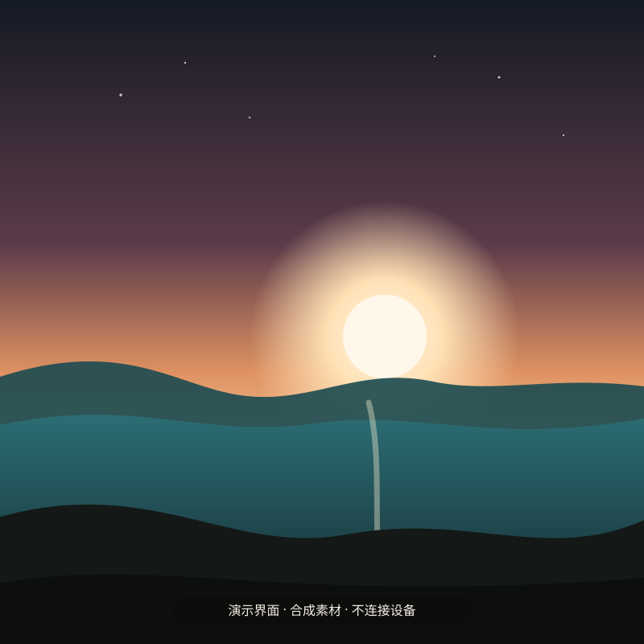
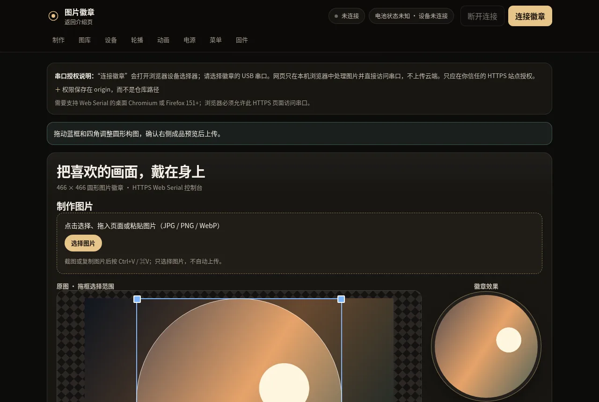

圆形屏幕，随身戴着。
让喜欢的画面，成为随身徽章。
在浏览器里裁好，用 USB 直接送到这块圆屏上。不需要安装助手。
圆形屏幕，随身戴着。
在浏览器里裁好，用 USB 直接送到这块圆屏上。不需要安装助手。

产品模型可随滚动转动。屏幕里是合成演示，没有连接设备。
铝壳包着玻璃边。继续往下，模型会转到侧面，再让你看见底部的接口。
裁切、轮播和切换都发生在圆里。现在播放的是演示画面，不是从设备读回来的照片。
短按 BOOT 开合菜单，长按约一秒进入睡眠。另一颗是电源键。
插上线，在桌面浏览器里点连接。串口选择器由浏览器自己弹出，页面不把图片传到云端。

用 HTTPS 打开控制台，接上 USB，点击“连接徽章”。浏览器权限选择必须由你自己触发。不需要 Python 服务、PWA 或本机助手。
串口权限绑定 origin，而不是项目路径。同一 *.github.io 主机名下的其他仓库页面可能同源，并看见已经授权的端口。只在信任的站点授权。需要隔开时，用单独的子域。
设备用 ESP32-S3 ROM 里的 TJpgDec 解码 JPEG。WebP 由浏览器转成 JPEG，设备不直接解 WebP。一次实测里，42 张自然照片的解码路径大约 228–284 毫秒，包含读文件、CRC 和 RGB 转换，会随图片和存储而变化，不是性能承诺。浏览器编码质量参数是 0.85。
切换可以是直接、淡变、水平推入，或成本较低的径向涟漪。涟漪用比较硬的边缘，换更低的渲染开销。
USB 或 VBUS（包括充电器）供电，或者电源状态还不知道时，睡眠只关闭显示和 IMU，USB 控制保持在线，可以点触屏唤醒。电池供电时，手动 SLEEP、电池闲置超时，以及熄屏后拔掉 USB 改由电池供电，都会在当前操作完成、手指松开、电源芯片准备好之后，请求 AXP2101 软件关机。这不是 ESP32 深度睡眠，也不靠 GPIO3 的 EXT0 唤醒。
关机后按住 POWER 大约两秒冷启动。电池闲置超时默认关闭。重启会清掉内存里的播放历史。已经保存的设置还在。实际耗电还没有测过。